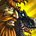

Thug Cleave · 贼 + 牧 + 猎 3v3
2v2 和 3v3 的分水岭
2v2 赢在两个人的伤害叠在一起。
3v3 赢在三个人的控制接成一条链。
3v3 赢在三个人的控制接成一条链。
Icy Veins 对这个组合的原话："每次想杀人，都要控住对面每一个人"（crowd control every time you go for a kill），并且指出敏锐贼只在围绕 setup 的组合里才被使用。
这不是我的推论，是这个组合的官方定性。
这不是我的推论，是这个组合的官方定性。
为什么加一个人就换了个游戏
伤害不再是瓶颈，控制才是▸
2v2：一个 DPS 打不穿一个治疗，所以牧师必须补伤害，两个人的伤害必须叠在一起——核心矛盾是"够不够疼"。
3v3：两个 DPS + 一个会打伤害的治疗，伤害绝对够了。目标只要没有治疗，几秒就能倒。核心矛盾变成"对面治疗有没有被锁住足够久"。
而锁住一个治疗需要至少两个人的控制接力——一个人的控制时长永远不够。这就是为什么 3v3 是控制链游戏。
还有一个成本变化：2v2 只有一对关系（贼↔牧）。3v3 有三对关系加一个整体。沟通复杂度是平方级涨的——所以 3v3 更依赖固定的套路和明确的角色，而不是临场反应。
每一轮，三个人分三个角色 —— 而且会轮换
锁匠 / 杀手 / 接手▸
这个组合最实用的框架不是"贼杀人、牧师奶、猎人输出"，而是每一轮给三个人分配三个角色：
🔒 锁匠
控住对面治疗，让他在窗口里做不了事。
通常是贼（
⚔ 杀手
全力输出击杀目标，什么都不管。
谁的爆发好谁当。贼的窗口最猛，猎人的持续最稳。
🔗 接手
接第二环控制、处理对面第三个人、处理突发。
这个角色最容易被忽略，但它是控制链能不能接上的关键。
关键：三个角色每轮轮换，不是固定的。贼这轮当锁匠（闷棍治疗），下轮可能当杀手（爆发全交）。开场前必须说清楚这一轮谁是谁——这就是下面那个分配器要练的东西。
猎人带来了什么（2v2 里没有的）
可预先布置的控制 + 一张救人的牌▸
🗡 贼
最强的锁匠，也是最强的杀手。
但他只能同时当一个——这就是 2v2 的困境：贼去控治疗就没人爆发，去爆发就没人控治疗。
但他只能同时当一个——这就是 2v2 的困境：贼去控治疗就没人爆发，去爆发就没人控治疗。
✚ 牧师
第三个伤害源 + 维持。
3v3 里他的输出压力比 2v2 小，可以匀出更多注意力做驱散、控制和保人。
3v3 里他的输出压力比 2v2 小，可以匀出更多注意力做驱散、控制和保人。
🏹 猎人
解开困境的那个人。
冰冻陷阱 是唯一可以预先布置的控制——不占施法时间。
牺牲咆哮 能把队友受的暴击伤害转到自己身上，这是这个组合唯一的"外部保命"。
耦合点
猎人的加入让贼从"必须二选一"变成"可以专职"。猎人当锁匠（陷阱控治疗）→ 贼可以全力当杀手。这是 Thug Cleave 相对贼牧 2v2 最大的结构性提升。
这一轮谁是谁？分配器
给三个角色各选一个人，看这个分配成不成立。
角色分配器
这一轮的分工
三个共享时钟
三个人的控制冷却 + 对面每个人身上的递减状态。这是 3v3 的第一资源，比伤害重要。
要记的不是"我还有什么"，是"对面身上还剩多少递减"▸
同一个治疗被眩晕两次之后，第三次只剩 25%。所以控制链要跨类别，而且要记账。见「控制链」页。
三个人的控制类别是你们最大的资产▸
贼有失能类+眩晕类，牧师有恐惧类，猎人有陷阱（失能类）+眩晕类。凑齐不同类别，能把一个治疗锁住很久。
贼的
三个爆发必须落在同一个控制窗口里。分开交＝对面治疗能分别应付。
给这一轮的杀手。通常是贼（爆发峰值最高）或猎人（稳定且远程）。不要给自己——你的伤害不是这一轮的主力。
爆发不齐就别开▸
3v3 的击杀窗口很短，缺一个爆发通常就打不穿。宁可再等十几秒，也不要用两个人的爆发去赌。

三个人各自的保命牌，加上两张能给别人用的：
官方描述：命令你的宠物保护一名盟友，使其受到的伤害降低 15%，同时该目标受到伤害的 50% 转移给你的宠物，持续 10 秒或直到宠物血量低于 25%。
用在对面爆发窗口开始的那一刻——它是减伤+分摊，早交才能覆盖最密集的那几下。
用在对面爆发窗口开始的那一刻——它是减伤+分摊，早交才能覆盖最密集的那几下。
三张外部保命不要同时交在一个人身上▸
本版定盘
Icy Veins 列出的敏锐贼 3v3 组合里，Thug Cleave = 贼 / 猎人 / 牧师。核心原则原话：
"crowd control every time you go for a kill" —— 每次想杀人，都要控住对面每一个人。
并且：敏锐贼只在围绕 setup（预设套路）的组合里才被使用。
并且：敏锐贼只在围绕 setup（预设套路）的组合里才被使用。
"控住每一个人"这句话值得展开：不只是控治疗——对面另外两个 DPS 也要被处理，否则他们会在你们杀人的时候反手杀掉你们的一个。这就是「接手」这个角色存在的理由。
敏锐：控制最干净、爆发最高，是这个组合的标准配置（Icy Veins 把 Thug Cleave 列在敏锐的组合表里）。
狂徒：持续压力更好，但剑刃乱舞 的溅射会破队友的控制——3v3 里控制更多，这个风险更大。
狂徒：持续压力更好，但
戒律：输出即治疗，能当第三个伤害源。
3v3 里他的输出压力比 2v2 小，可以匀出注意力做驱散和应急控制——这是「接手」角色的最佳人选。
3v3 里他的输出压力比 2v2 小，可以匀出注意力做驱散和应急控制——这是「接手」角色的最佳人选。
射击：远程爆发高、稳定，最省心的杀手。
生存：近战混合，控制更多（陷阱+近战控），更适合当锁匠，但要跟贼抢近战位置。
生存：近战混合，控制更多（陷阱+近战控），更适合当锁匠，但要跟贼抢近战位置。
耦合点
标准配置是「敏锐 + 射击 + 戒律」：贼当锁匠或杀手、猎人当另一个、牧师当接手。
本页以这个配置为主线。
本页以这个配置为主线。